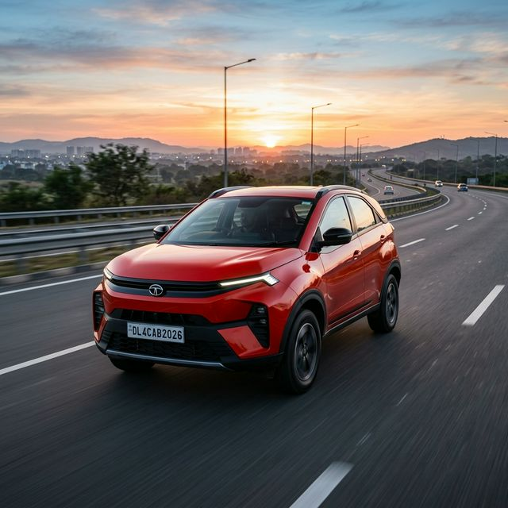
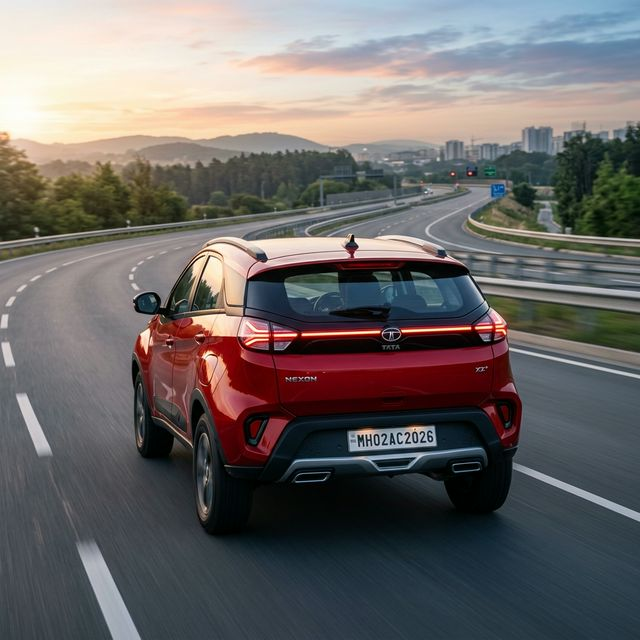

The Tata Nexon continues to dominate the compact SUV market by offering unparalleled safety and futuristic aesthetics. With its latest facelift, it brings features typically found in premium luxury cars to the masses.

| Feature | Details |
|---|---|
| Engine Types | 1.2L Turbo Petrol / 1.5L Diesel |
| Maximum Power | 120 PS (Petrol) / 115 PS (Diesel) |
| Transmission | 6-MT, 6-AMT, 7-DCA (Dual Clutch) |
| Boot Space | 382 Liters |
| Sunroof | Electric with Voice Command |
| Infotainment | 10.25-inch Floating Display |
The Nexon Diesel MT offers a best-in-class mileage of approximately 24.1 kmpl as per ARAI standards.
While not a full Level 2 ADAS, it features several safety monitors and advanced ESP with electronic traction control.
Yes, the 7-speed DCA offers much smoother and faster gear shifts compared to the budget-oriented 6-speed AMT.
Tata now offers 6 airbags as standard across all variants of the Nexon, ensuring top-tier safety for all passengers.
Yes, the top-spec Fearless and Creative trims come with front ventilated seats for added comfort in Indian summers.
Yes, Tata's IRA 2.0 connected car suite supports smartwatch integration for remote locks and analytics.
The Tata Nexon is the most well-rounded compact SUV for those who won't compromise on safety or technology.